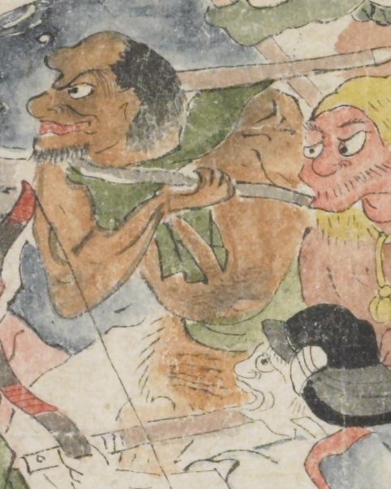

茶色の肌の鬼。額は出っ張り、後頭部から髪を生やしている。目玉と鼻が大きく、顎ひげを生やしている。肩に緑色の布を掛け、腰に緑色の布と毛皮を巻いている。腕に棒状のものを持ち、左側に向っている。
著作者：坂本弥一郎徳定／出典：親書誌：U426_nichibunken_0080：伊吹山酒呑童子絵巻；イブキヤマシュテンドウジエマキ／日付：2007／資源識別子：U426_nichibunken_0080_0013_0008
Copyright (c)2010- International Research Center for Japanese Studies, Kyoto, Japan. All rights reserved.